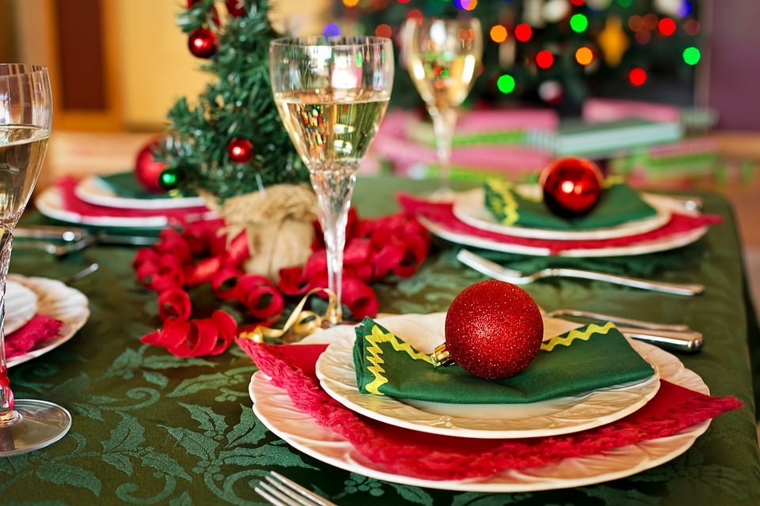
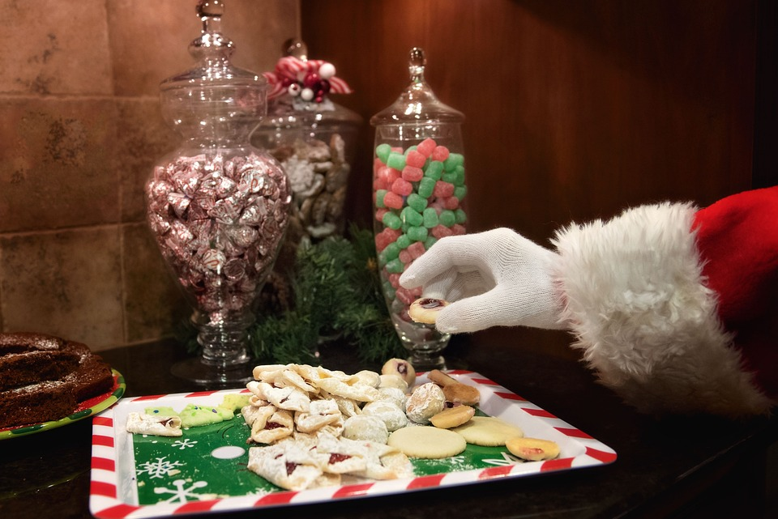
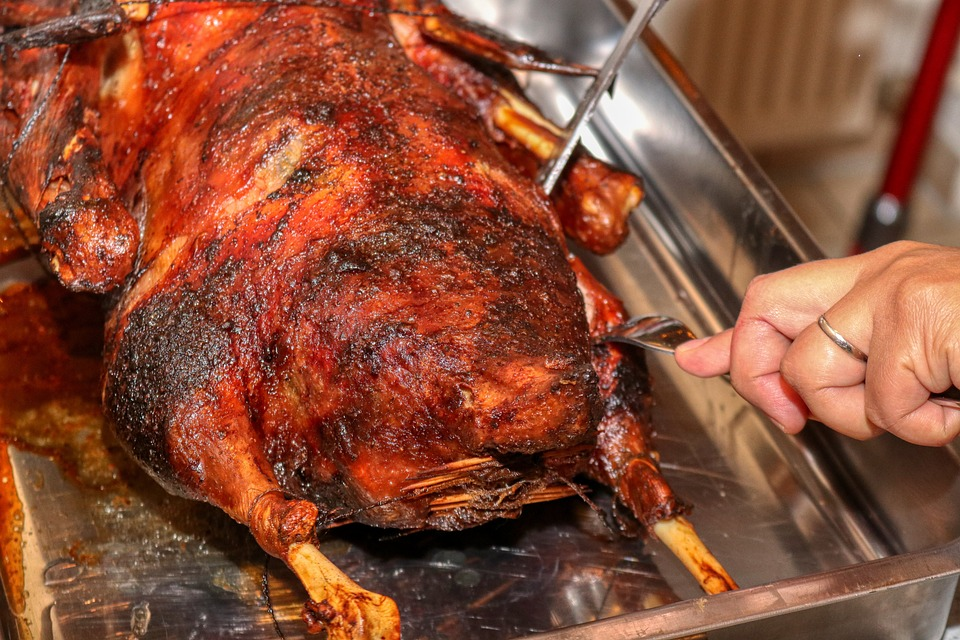

Typisches Weihnachtsgebäck
Weihnachtsgebäck (schweiz.: Weihnachtsgüetzi, Weihnachtsguetzli etc.) sind vorwiegend süße Backwaren, die traditionell in der Adventszeit gebacken und in der Weihnachtszeit verzehrt werden. Beispiele sind Plätzchen, Lebkuchen, Christstollen, Früchtebrot, Förtchen, Zimtsterne, Spekulatius oder Vanillekipferl.

Typisches Weihnachtsessen
In Deutschland gibt es am Abend des 24. Dezembers traditionell Ente oder Gänsebraten, in einigen Regionen auch Karpfen, Forelle oder schlicht Kartoffelsalat mit Würstchen. Raclette in allen Varianten ist bei den Deutschen ebenfalls sehr beliebt.